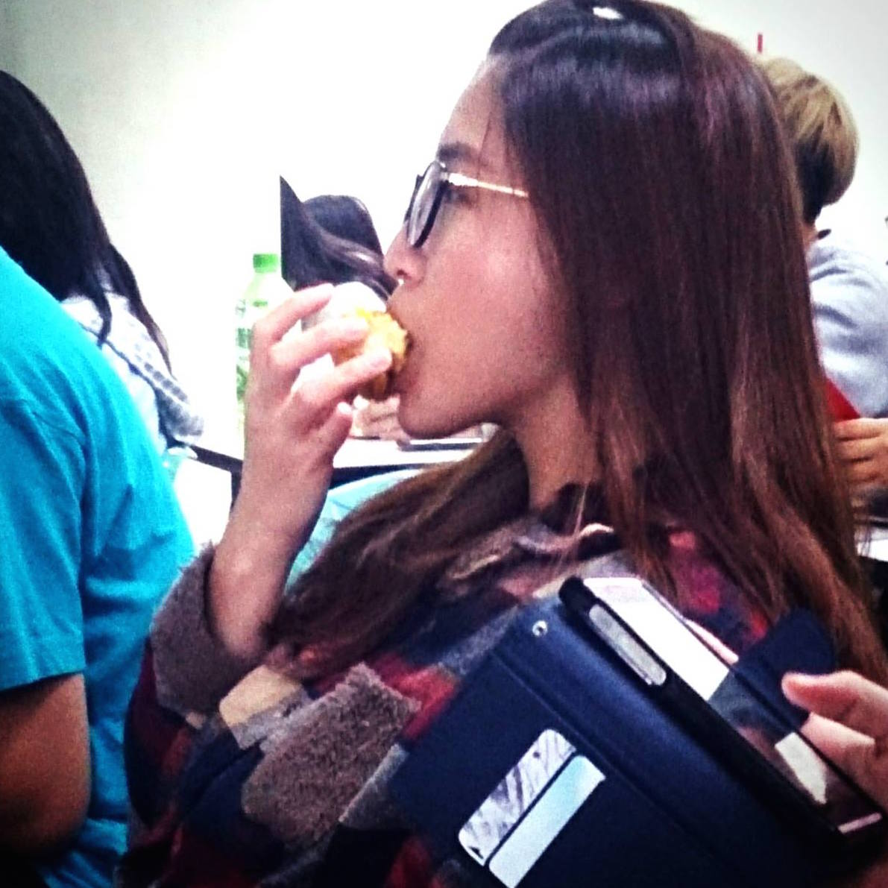
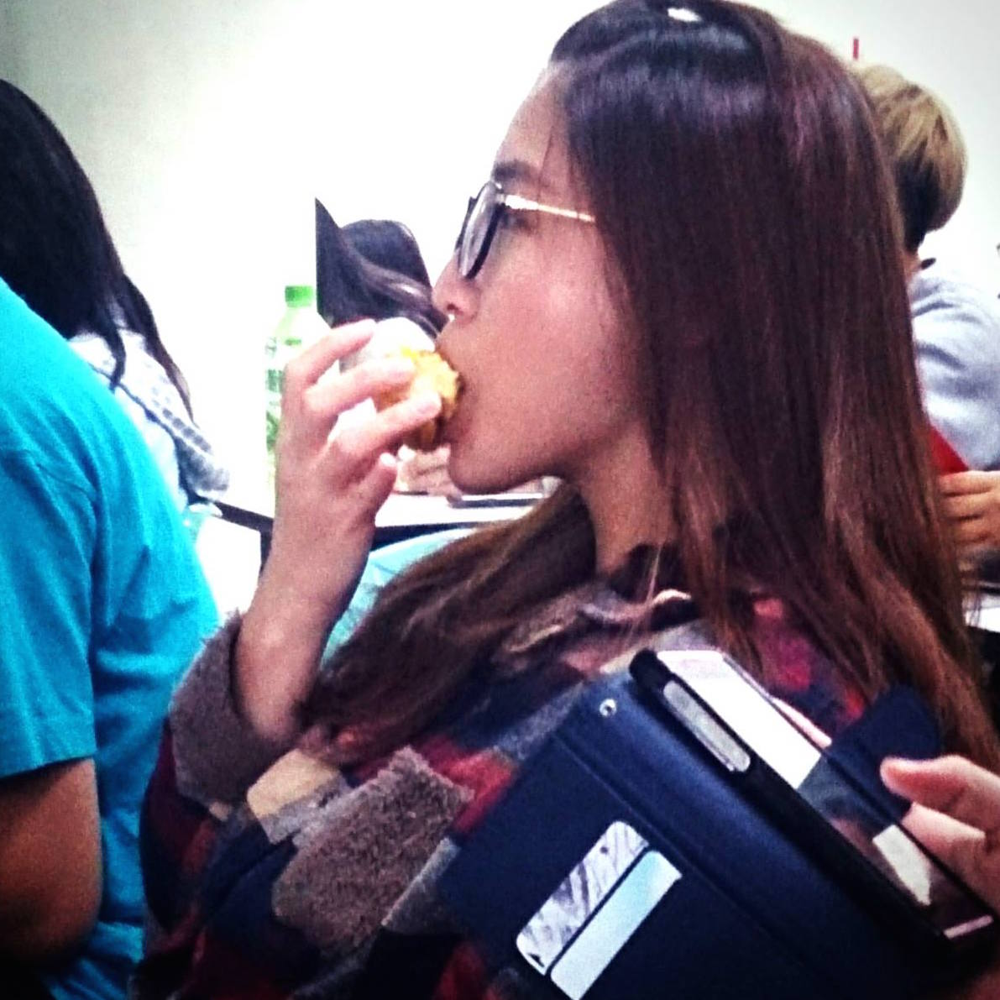

This is White Lin
真心覺得好像很好玩（吧）
我美嗎 想更認識我嗎
看呀看 看一堆醜照真開心-from Shen
OMGOSH KITTENZ!!!1!
thx 他就是一個林白 痴啊(撒花) 
This is White Lin真心覺得好像很好玩（吧） 我美嗎 想更認識我嗎 看呀看 看一堆醜照真開心-from ShenOMGOSH KITTENZ!!!1!thx 他就是一個林白 痴啊(撒花) 
|